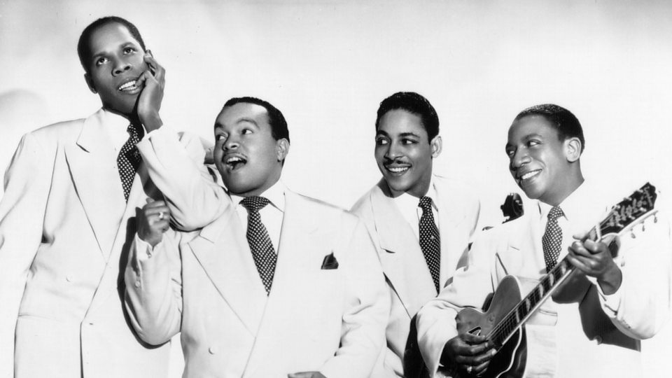

About Me
Hi name is Emilio Conde I like Punk Music and Aquariums. Currently I am working as a guest educator.
- My Favorite Things
- Six Pack by Black Flag
- The fish below is a Silver Dollar. Native to South America, These fish are related to the Pacu and the Piranha. Unlike the Piranha and Pacu, which are carnivores and omnivores, respectivly, the Silver Dollar is a peaceful herbivore.
My friend and I at h09909

Epic tracks of History
- 1920-Billie Holiday Lets Do it
- 1930-Over the Rainbow Judy Garland
- 1940-Ink Spots-We Three 
- 1950-Hank Williams-Cold,Cold Heart

- 1960-White Rabbit-Jefferson Airplane
- 1960-Johnny Cash Cocaine Blues
- 1970-Marvine Gaye-Got to give it up

- 1970- The Grateful Dead Candy Man
- 1980-Beastie Boys-Brass Monkey
- 1980- The Dead Kennedys-Police Truck
- 1990-Selena- Amor Probido
- 2000-MFdoom and Madvillan- Meatgrinder
- 1990-Melvins Honey Bucket
- 2000-Justice Genesis
- 2010-Tame Impala-The less I Know the Better
- 2010-Death Grips-Hacker